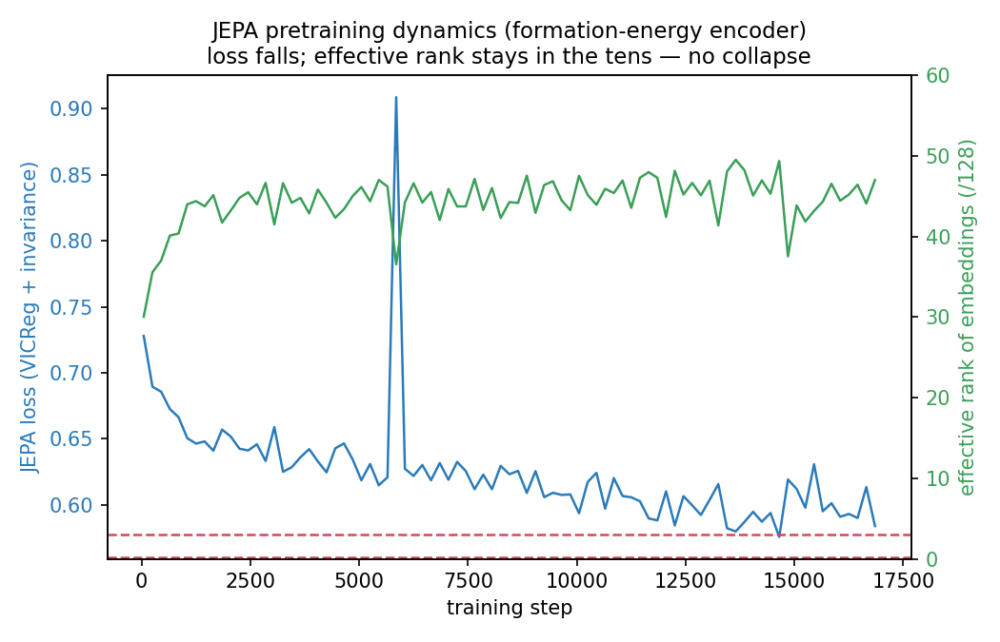
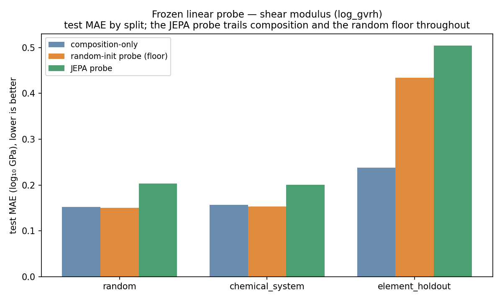
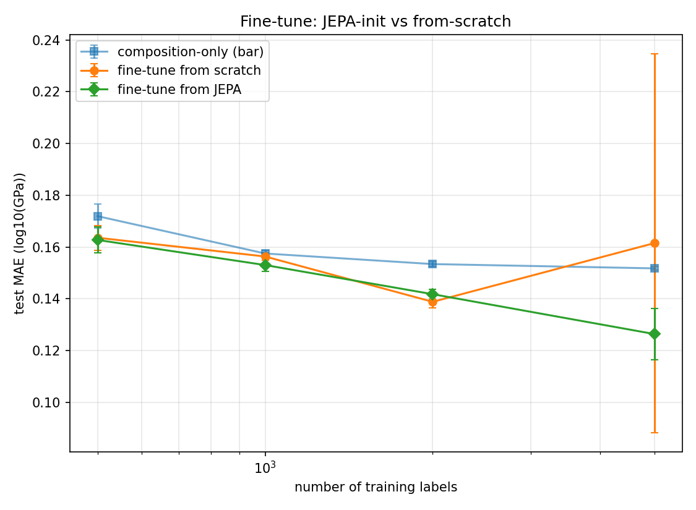
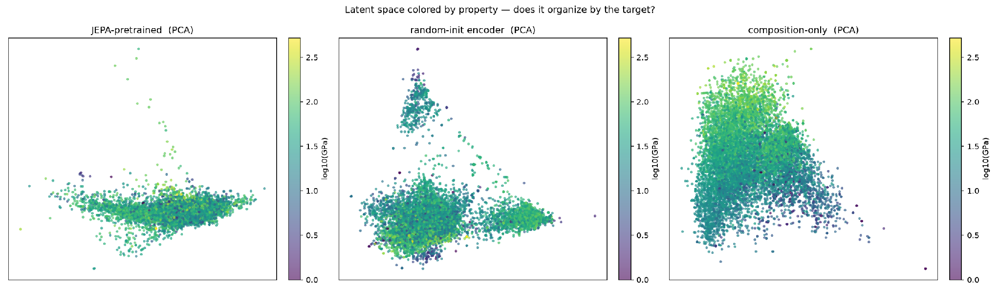

Abstract
Self-supervised learning(SSL) has birthed many language and video models by proposing learning first from unlabeled data and then from labels afterward. The Joint Embedding Predictive Architecture (JEPA) [1] is an established method in non-generative SSL. Its standout feature is that it predicts a masked region’s semantic representation rather than its raw content. This methodology is incredibly appealing for materials science, where labelled crystal properties are both scarce and expensive, but unlabeled structures are abundant. Thus, we propose a question: does JEPA-style pretraining on unlabeled crystal structures make downstream property prediction more label-efficient? We evaluated this methodology using a custom-built end-to-end pipeline, run on two distinct properties, and tested across several metrics. Under the architectures, datasets, and objectives tested here, the conclusion is a firm no, and in this post we explore the reasons as to why, as well as where JEPA could still be applied in materials science and engineering.
The baseline
A trustworthy supervised model is needed for evaluating the proposed model against. A crystal graph convolutional neural network (CGCNN) [2] was chosen for the baseline, reimplemented from scratch with element embeddings as node features, Gaussian-expanded interatomic distances as edges, four gated convolution layers, mean pooling, and a small readout. Reproducing the CGCNN resulted in a bug: aggregating each atom’s neighbour messages by an unnormalized sum makes predictions explode on high-coordination crystals. Because mean absolute error (MAE) is an absolute error average over all samples, a single bad structure dragged the reported error to 87 log₁₀GPa while the median stayed near 0.075. To solve this, mean, degree-normalized aggregation was implemented, which removes the failure at no measurable cost to accuracy. Validated on the Matbench log_gvrh benchmark [3] under its official folds, the model MAE reached 0.1066 log₁₀GPa — about 1.26x the leaderboard best, with a median fold error below it. This showed the baseline comparison was reasonable for the comparisons that we will perform.
Another feature of this baseline was that the reported number depends heavily on how the data is split. A random split leaks near-duplicate chemistries across train and test, while a chemical combination holdout split(chemical_system split) doesn’t leak, but allows the model to interpolate systems with elements it has already seen. Holding out whole elements from the training instead moves the same model MAE from 0.135 to 0.690 eV/atom on formation energy, and its edge over a plain composition-only baseline collapses from about 3.6x to 1.1x. In crystals, element fractions alone are a strong predictor, a fact that shapes the JEPA results below.
Building JEPA for Crystals
This implementation of JEPA reuses some of the crystal graphs machinery, along with adding the four standard JEPA pieces. The context encoder is the CGCNN, run online. The target encoder is an exponential moving average (EMA) copy of it, updating without gradients (stop gradient), which stabilizes against representation collapse [4]. A narrow predictor infers a masked region’s representation from the context and a geometry-only positional query, with the masked atoms’ identities withheld (a leak test in code enforces this). Lastly, to mask a chunk of crystal, we use spatial-ball masking, which hides contiguous neighbourhoods over the periodic graph, a crystal analogue of I-JEPA’s block masking [5]. While the EMA and the stop-gradient discourage total collapse, subtler dimensional collapse can still occur in this model [6]. Thus, a Variance-Invariance-Covariance Regularization (VICReg) [7] floor is added, and the embedding rank is recorded from the start of training.
Pretraining ran cleanly: the loss fell smoothly while the effective rank of the embedding rose into the 40s and held, well above the collapse floor, as demonstrated in Figure 1 below.

Figure 1. JEPA pretraining dynamics: the loss fell while the embedding’s effective rank stayed in the tens, well above the collapse floor.
The evaluation on formation energy
The cleanest test of a frozen representation is a linear probe. Thus, we freeze the encoder and fit a linear map to the target. When tested for formation energy, the JEPA probe fell behind the composition-only baseline on every split: random, novel chemical systems, and novel elements. It also fell behind an untrained random-initialization (random-init) encoder on every split except novel elements, where the unseen test elements weaken all three probes. The random-init encoder is an intentionally strong control, not a random-noise baseline. Even untrained, its fixed graph architecture still turns element identities and crystal connectivity into structured, deterministic features. This is what makes falling behind it meaningful. On this task, a representation that is worse than just element fractions is not practically useful.
Testing across different label budgets with the frozen probe resulted in the same outcome: the JEPA probe is the worst of the four predictors at every budget. JEPA results roughly 0.63–0.87 eV/atom, against 0.14–0.36 for the from-scratch CGCNN, 0.45–0.52 for the random-init probe, and 0.49–0.55 for composition. Pretraining does not lift the scarce-label end of the curve.
However, this failure is not without reason. A non-collapsed, high-rank representation is unhelpful here because it does not retain what formation energy depends on: composition. Probing each encoder to reconstruct element composition showed this clearly. The random-init embeddings recover composition almost exactly (MAE 0.0021), and the JEPA embeddings are about six times worse (0.0136). This result is consistent with the pretext emphasizing structure and preserving composition less.
Allowing the encoder to adapt with fine-tuning put the JEPA encoder on the same level, but did not enable it to perform better than the evaluation baselines. Across five seeds at each budget from 250 to 2000, the median from-scratch run is at least as accurate as JEPA-init everywhere, slightly better at lower budgets and nearly the same by 2000. Thus, we can see that pretrained initialization does not improve the median result. The 250-label budget mean suggests otherwise at first glance, but closer inspection reveals a single from-scratch seed diverged, and median results remain untouched. Seed-to-seed spread is otherwise comparable between the two (at 500 and 1000 slightly larger for JEPA-init), so no stability advantage can be claimed for either.
The evaluation on shear modulus, a structure-sensitive target
Formation energy is one of the most composition-dependent properties available, which is also why it was chosen as the most difficult test for the JEPA encoder. Before drawing a conclusion from its negative result, we will also consider shear modulus (from Matbench log_gvrh), which depends on bonding stiffness and coordination geometry, not solely stoichiometry. A fresh encoder was pretrained on ~11,000 modulus structures (again no collapse), and the same evaluations were conducted.
The outcome, however, remains the same. The frozen probe underperforms compared to composition or random floor on every split, by roughly the same margins as the formation energy test (about 1.3x worse than composition on the random split for both), as demonstrated by Figure 2 below.

Figure 2. Frozen linear probe on shear modulus: the JEPA probe error is higher than composition and the random-init floor on every split.
The label-efficiency sweep said the same thing numerically, as seen below in Table 1. This is the experiment in which JEPA should show its value, as it is meant to perform better under scarce label conditions.
Table 1. Comparison of MAE at each label budget, mean of 5 seeds, units log₁₀(GPa)
| Labels | Composition | CGCNN scratch | Random-init probe | JEPA probe |
|---|---|---|---|---|
| 500 | 0.172 | 0.167 | 0.169 | 0.240 |
| 1000 | 0.157 | 0.152 | 0.156 | 0.219 |
| 2000 | 0.153 | 0.150 | 0.151 | 0.214 |
| 5000 | 0.152 | 0.121 | 0.149 | 0.210 |
| 8791 (full) | 0.150 | 0.109 | 0.147 | 0.208 |
The JEPA probe was the worst predictor at every budget. The random-init probe roughly matches composition, and the from-scratch network becomes better than the rest as label amount increases. No scarce-label regime shows a benefit from pretraining. Fine-tuning again converges toward from-scratch: the only consistent edge is at 1000 labels, where JEPA-init beats from-scratch across all five seeds by about 2%. It is level or behind at the other budgets. A single from-scratch seed diverges at 5000 in Figure 3 below, which makes JEPA appear as though it is better, but median values are from-scratch 0.129 and JEPA 0.126, a much closer comparison than the graph shows.

Figure 3. Fine-tuning on shear modulus. JEPA-init (green) and from-scratch (orange) converge; the wide orange bar at 5000 labels is a single diverging seed.
The evaluation on screening rather than regression
A frozen linear probe is an intentionally demanding test for a representation, which can still be useful since failure does not show that information is absent, only that it isn’t linearly accessible. Rather than regress a property, we rank and filter structures by distance within latent space. This is a use case of JEPA that the recent Crys-JEPA work [8] is built on. In a well-constructed latent space, nearby crystals share similar properties. This is tested in two ways: the mean property gap to each crystal’s ten latent neighbours, and retrieval quality of the stiffest decile from a few known examples. Both are tested against random-init and composition baselines. The results can be seen in Table 2 below.
Table 2. Latent-space screening test on neighbour MAE, retrieval area under the receiver operating characteristic (ROC) curve(AUC), and enrichment factor (EF) at the top 1%
| Latent space | Neighbour MAE ↓ | Retrieval AUC ↑ | EF@1% ↑ |
|---|---|---|---|
| JEPA-pretrained | 0.212 | 0.48 | 1.11 |
| random-init encoder | 0.198 | 0.52 | 0.74 |
| composition-only | 0.205 | 0.74 | 2.32 |
| random chance | 0.413 | 0.50 | 1.00 |
The JEPA latent space is less property-coherent than both the random-init encoder’s and the composition’s. On retrieving the stiffest decile, composition cleanly beats all competition, while JEPA results are near random chance. As seen below in Figure 4, the composition space shows a clear gradient and the JEPA space does not.

Figure 4. Latent space coloured by shear modulus, lighter for higher and darker for lower.
Evaluating structure instead of property
The JEPA embedding could not beat the baseline on any property metric. To understand if it has learned anything useful at all, we now evaluate the embedding for learned structure, the test most aligned with JEPA’s base design. A representation can carry no meaningful property signals and still encode a crystal’s geometry. To check the embeddings, we classify each embedding’s crystal system (one of seven symmetry classes, a structure-only label derived from lattice symmetry) with a fitted linear model and compare the result against the true crystal system.
Table 3. Measure of accuracy and unweighted class average (Macro) F1 for all embeddings’ crystal systems, evaluated against a classifier that predicts the most common class (majority-class)
| Embedding space | Accuracy ↑ | Macro-F1 ↑ |
|---|---|---|
| JEPA-pretrained | 0.420 | 0.234 |
| random-init encoder | 0.433 | 0.259 |
| composition-only | 0.426 | 0.249 |
| majority-class | 0.355 | 0.075 |
All three encoders were more accurate than the majority-class bar, so each has some structural signal. However, the pretrained encoder does not beat a random-init one or a composition-only one. This means pretraining, under this linear evaluation, did not improve recoverable crystal-system information relative to what the random-init embedding already holds.
The results
Pretraining ran cleanly without collapse and with high effective rank. It learned a representation organized around local structure. However, this representation retained substantially less recoverable composition, was not aligned with predicting either shear modulus or formation energy, and was no better than random features at recovering crystal structure classification. A frozen probe cannot read the target from the embedding, and fine-tuning largely converged toward from-scratch regardless of the initialization. Latent space proximity does not correlate with properties, and the similar lack of results on predicting a composition-dependent and a structure-dependent target suggests that the problem lies with the shared pretraining setup (pretext, masking, encoder, and scale) rather than the target.
This is a clear negative on the question of whether JEPA is good at predicting crystal material properties in this case. This conclusion is consistent across two distinct properties and five tests (frozen probe, label efficiency, fine-tuning, screening, and structural classification).
Further
These negative results deliver a verdict on this particular implementation, but they do not kill the JEPA paradigm for materials science applications. The most evident modification is to change the pretraining setup. Adding a denoising objective (perturb atomic positions and predict the perturbation) would be grounded in physical principles (similar to predicting force fields). This could allow embeddings to retain composition, and similar denoising objectives have produced strong molecular representations [9]. Increasing the scale of data may also serve to improve our representation. The current 10 - 20k structure dataset would be considered small for self-supervised learning, and the Materials Project dataset [10] has ~150k structures, while interatomic-potential datasets reach into the millions. A larger, equivariant encoder (the MACE / NequIP family) [11] would represent geometry and directionality far more faithfully than a 350k-parameter CGCNN.
A combination of all three: a pretext with basic physics awareness, an equivariant encoder, trained on more data, approaches the description of the machine-learned interatomic potentials (MLIP) that currently give very strong crystal representations: models trained on energies and forces, typically from DFT. These results point less to a failure of self-supervised representation learning in materials and more towards using a different kind of structure learning for crystal materials. The MLIP approach would be a more promising method for further attempts at materials property prediction.
Methods
Data. 20,000 Materials Project structures (formation energy, eV/atom) [10]; Matbench log_gvrh (10,987 structures, log₁₀GPa) [3] for both pipeline validation and the second JEPA target. Graphs use a 5.2 Å neighbour cutoff with periodic boundary conditions and a 40-Gaussian distance expansion.
Model. CGCNN, 128-dim node embeddings, 4 gated convolution layers with mean (degree-normalized) aggregation, residual connections and BatchNorm, mean pooling, MLP readout (~0.35M parameters). Adam (weight decay 1e-5), cosine-annealed LR, early stopping on validation.
JEPA. Online CGCNN encoder + EMA target (momentum 0.996→0.9999, stop-gradient); narrow predictor with a geometry-only positional query (species excluded, leak-tested); spatial-ball masking over the periodic graph; loss = normalized-MSE invariance + VICReg variance/covariance on the online representation; 60 epochs; a separate encoder pretrained per target.
Evaluation. Frozen linear probe under random, chemical_system, and element_holdout splits; label-efficiency and fine-tuning on a fixed split with seed-controlled nested subsamples; screening = latent k-NN neighbourhood coherence and stiff-tail retrieval; structure probe = linear classification of crystal system (pymatgen symmetry) — all against random-init and composition controls. Composition baseline = least-squares (or logistic) on element fractions. Pretraining, label curves, and Matbench cross-validation ran on Kaggle T4 GPUs; probes, screening, and analysis ran locally on an Apple M1. All regression results are reported as mean absolute error (MAE) in each target’s natural units, as this is the metric Matbench and the CGCNN literature use, so the numbers are directly comparable to the leaderboard. Because MAE is a mean and therefore sensitive to a few large errors, median fold error is reported alongside it.
References
[1] LeCun, Y. A Path Towards Autonomous Machine Intelligence (2022). OpenReview.
[2] Xie, T. & Grossman, J. C. Crystal Graph Convolutional Neural Networks. Phys. Rev. Lett. 120, 145301 (2018). arXiv:1710.10324.
[3] Dunn, A. et al. Benchmarking materials property prediction methods: the Matbench test set. npj Comput. Mater. 6, 138 (2020).
[4] Grill, J.-B. et al. Bootstrap Your Own Latent (BYOL). NeurIPS 2020. arXiv:2006.07733.
[5] Assran, M. et al. Self-Supervised Learning from Images with a Joint-Embedding Predictive Architecture (I-JEPA). CVPR 2023. arXiv:2301.08243.
[6] Jing, L. et al. Understanding Dimensional Collapse in Contrastive Self-Supervised Learning. ICLR 2022. arXiv:2110.09348.
[7] Bardes, A., Ponce, J. & LeCun, Y. VICReg. ICLR 2022. arXiv:2105.04906.
[8] Liu et al. Crys-JEPA: Accelerating Crystal Discovery via Embedding Screening and Generative Refinement. arXiv:2605.14759 (2026).
[9] Zaidi, S. et al. Pre-training via Denoising for Molecular Property Prediction. ICLR 2023. arXiv:2206.00133.
[10] Jain, A. et al. The Materials Project. APL Materials 1, 011002 (2013).
[11] Batatia, I. et al. A foundation model for atomistic materials chemistry (MACE-MP-0). 2023. arXiv:2401.00096.